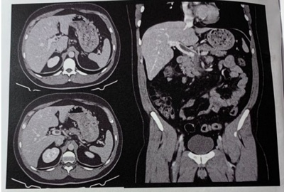
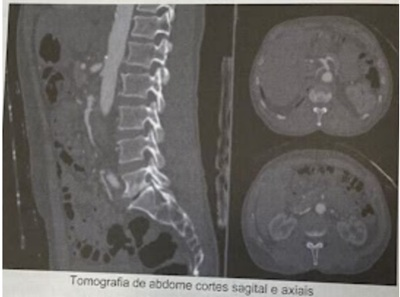
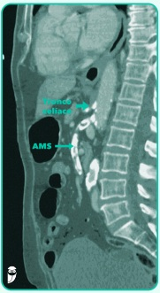
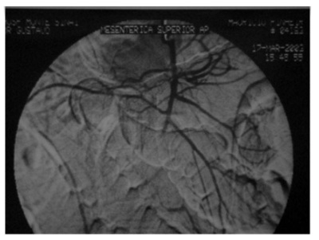
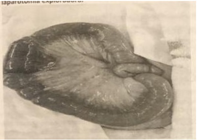
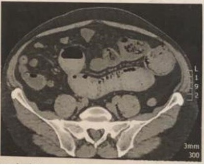

Questão 1 · Isquemia Mesentérica Aguda · 4000188433Sobre Isquemia Mesentérica, assinale a alternativa INCORRETA:
A Os principais troncos viscerais responsáveis pela circulação esplâncnica são: Tronco celíaco, artéria mesentérica superior e artéria mesentérica inferior.
B Abdome agudo vascular que apresenta mortalidade alta.
C Suspeitar quando o paciente apresentar abdome inocente, desproporcional aos achados de exame.
D O tratamento objetiva restabelecer o fluxo sanguíneo e a ressecção de segmentos inviáveis.
Questão 2 · Manif estações Clínicas e Exame Físico · Isquemia Mesentérica Aguda · 4000188346No seu hospital de Urgência dá entrada um homem de 88 anos com quadro clínico de abdome agudo. Relata dor abdominal de forte intensidade de aparecimento há pouco mais de uma hora. Na anamnese tem antecedentes de tabagismo há mais de 60 anos, estenose de carótida direita (já submetido a implante de prótese), também doença coronária (submetido a angioplastia e colocação de stent). O exame físico mostra abdome distendido, levemente doloroso à palpação profunda (apesar da dor intensa que o paciente refere), não há irritação peritoneal, peristalse presente com ruídos bem diminuídos, sem ascite. Diante deste quadro clínico a principal hipótese diagnóstica, pelo quadro sindrômico, será de:
A Abdome agudo obstrutivo
B Abdome agudo com ílio metabólico
C Abdome agudo inflamatório
D Abdome agudo perfurativo
E Abdome agudo isquêmico
Questão 3 · Anatomia Vascular do Trato Gastrointestinal · Anatomia do Sistema Digestório · 4000187533A artéria mesentérica superior tem origem na aorta abdominal. Emite ramos arteriais para todo o delgado e a metade proximal do cólon. Seus ramos principais são, exceto:
A Ramos jejunoileais.
B Ileocólica e apendicular.
C Cólica direita.
D Cólica esquerda.
Questão 4 · Trombose Venosa · Trombose da veia porta · 4000187473Mulher, 35 anos de idade, procura pronto atendimento devido a dor abdominal difusa há cinco dias. Nega alterações urinárias ou intestinais. Tem antecedente de endometriose, em tratamento com anticoncepcional oral combinado. Ao exame físico, encontra-se em bom estado geral, anictérica, afebril, pressão arterial 130x70mmHg, frequência cardíaca 85bpm e índice de massa corporal 37kg/m². Abdome globoso, ácido, doloroso à palpação difusamente, sem sinais de irritação peritoneal. Realizou tomogra a computadorizada de abdome total, mostrada a seguir: Qual é o diagnóstico da paciente?

A Ureterolitíase
B Coledocolitíase
C Cisto ovariano roto
D Trombose de veia porta
Questão 5 · Introdução · Abdome Agudo Vascular · 4000186753Sobre as Isquemias Intestinais Agudas, é incorreto afirmar que:
A Com a melhora recente do diagnóstico e do tratamento, a mortalidade tem caído substancialmente.
B O diagnóstico clínico é muito difícil, principalmente devido ao exame físico inocente no quadro inicial.
C Nas isquemias agudas arteriais, o tratamento endovascular, quando possível, vem ganhando importante papel.
D Nos casos originados por trombose venosa mesentérica, o tratamento é realizado com anticoagulação sistêmica e ressecção das alças inviáveis.
E Pode ter origem embólica arterial, trombótica arterial ou trombótica venosa.
Questão 6 · Manif estações Clínicas e Exame Físico · Exames de Imagem · 4000185794Paciente masculino, 74 anos, diabético, hipertenso e com bypass coronariano prévio, deu entrada no hospital com diagnóstico de pé diabético, sem sinais de sepse, sendo internado para antibioticoterapia endovenosa. No segundo dia de internação, iniciou quadro de dor abdominal difusa, intensa, encontrado gemente no quarto. Ao exame, paciente acordado, comunicativo, gemente, afebril, eupneico, taquicárdico (frequência cardíaca de 101 bpm), ritmo cardíaco irregular, pulso amplo, abdome discretamente distendido, ruídos hidroaéreos diminuídos, timpânico, depressível, levemente doloroso, sem sinais de irritação peritoneal. Apresentou hábito intestinal normal até o início da dor. Diante do quadro, qual dos itens abaixo combina o tipo mais provável de abdome agudo e sua respectiva propedêutica de exame de imagem mais indicada:
A Abdome agudo inflamatório, ultrassonografia de abdome total.
B Abdome agudo obstrutivo, radiografia de abdome agudo (em pé, deitado e cúpulas diafragmáticas).
C Abdome agudo hemorrágico, radiografia de abdome agudo (em pé, deitado e cúpulas diafragmáticas).
D Abdome agudo vascular, angiotomografia de abdome com contraste endovenoso.
Questão 7 · Isquemia Mesentérica Crônica · Cirurgia · 4000184354Homem, 72a, procura Pronto Socorro queixando-se de dor abdominal em cólica há um mês, periumbilical, com piora há uma semana, principalmente após as refeições, sem melhora com analgésicos e necessitando permanecer em posição antálgica. Antecedente pessoal: infarto agudo do miocárdio há 12 anos, diabetes melito há 22 anos, tabagismo 40 anos/maço. Exame físico: FC=108bpm; PA=162x78mmHg; abdome: plano, normotenso, ácido, sem irritação peritoneal, sem tumor palpável; membros inferiores: pulsos pediosos ausentes, pulsos tibiais posteriores presentes. DIAGNOSTICA É:
A Angina mesentérica.
B Úlcera péptica.
C Cólica biliar.
D Aneurisma de aorta.
Questão 8 · Trombose Venosa · Cirurgia · 4000183648Mulher de 32 anos de idade procura o pronto-socorro por dor abdominal há 14 dias, com piora após qualquer alimentação. Tem antecedentes de lúpus eritematoso sistêmico, que trata com corticoide por via oral. Nega febre. Refere estar mais constipada. Pulso: 90 bpm, regular, PA: 110 × 80 mmHg. O abdome é um pouco doloroso, difusamente. Não tem sinais inequívocos de irritação peritoneal. A tomogra a de abdome mostra distensão de delgado e sinais de trombose venosa aguda. A melhor abordagem na urgência é
A Enoxaparina.
B Clopidogrel.
C Warfarina.
D Papaverina.
E Laparoscopia.
Questão 9 · Cirurgia · Embolia Arterial · 4000182813Assinale a assertiva correta sobre isquemia mesentérica aguda devido a êmbolos liberados a partir das cavidades cardíacas.
A Fibrilação atrial é a condição cardíaca mais comum associada a embolia.
B Os êmbolos ocluem os primeiros ramos jejunais na maioria dos casos.
C Quando ocorre embolia na artéria mesentérica superior, o quadro clínico é insidioso devido à ampla circulação colateral.
D A tríade dor abdominal, evacuação sanguinolenta e hipotensão está presente em mais de 2/3 dos casos.
Questão 10 · Cirurgia · Trombose Arterial · 4000182602A colopatia isquêmica é a forma mais comum de isquemia intestinal e a maior parte das crises é transitória e de resolução espontânea. Qual o local mais comum da ocorrência dessa patologia?
A Ceco.
B Ângulo esplênico.
C Cólon transverso.
D Apêndice cecal.
E Ângulo hepático.
Questão 11 · Isquemia Mesentérica Crônica · Cirurgia · 4000182192Homem de 64 anos com quadro de perda acentuada de peso (20 kg em 6 meses), astenia e dor abdominal pós prandial. Possui hipertensão arterial sistêmica descontrolada e tabagismo ativo. Ao exame físico, apresenta-se em regular estado geral, hipocorado e hidratado. Peso atual 47 kg, Abdome escavado sem dor à palpação no momento. Aorta abdominal palpável e pulsátil, porém endurecida. Sopro sistólico audível em mesogástrio sem alteração com a respiração. Pulsos em membros inferiores presentes e simétricos. Realizou tomografia de abdome abaixo: Qual o diagnóstico mais provável?

A Síndrome do ligamento arqueado mediano.
B Neoplasia de cabeça de pâncreas.
C Compressão duodenal por aneurisma de aorta abdominal.
D Isquemia mesentérica crônica.
Questão 12 · Anatomia Vascular do Trato Gastrointestinal · 4000191822Considerando a conformação anatômica da irrigação arterial do cólon, assinale a alternativa CORRETA:
A O ponto crítico de Griffith está localizado na região da transição retossigmoideana.
B O ceco, cólon ascendente e os segmentos proximais do cólon transverso são territórios de irrigação da artéria mesentérica inferior.
C A arcada de Riolan é a comunicação entre o tronco celíaco e a artéria mesentérica inferior.
D A artéria cólica média é ramo da artéria mesentérica superior.
Questão 13 · Anatomia Vascular do Trato Gastrointestinal · Anatomia e Fisiologia do Intestino Delgado e Grosso · 4000189946O tronco celíaco é mais frequentemente formado por 3 artérias. Quais são elas?
A Art. Gástrica Direita, Art. Esplênica e Art. Hepática Comum.
B Art. Gástrica Esquerda, Art. Esplênica e Art. Gastrite Direita.
C Art. Gástrica Esquerda, Art. Esplênica e Art. Gastro-duodenal.
D Art. Gástrica Esquerda, Art. Hepática Comum e Art. Esplênica.
E Art. Gástrica Direita, Art. Hepática Comum e Art. Mesentérica Superior.
Questão 14 · Exames de Imagem · Exames Complementares · 4000176000Paciente, 73 anos de idade, sexo feminino, IMC = 23, apresenta quadro de dor abdominal de forte intensidade de início súbito, localizada no mesogástrio. Ao exame físico, observa-se taquicardia, sem distensão abdominal e sem sinais de irritação peritoneal. Exames laboratoriais mostram hemograma sem alterações significativas, uma gasometria com acidose metabólica e lactato de 7,3 mol/L. Em relação à paciente, o exame de imagem que deverá ser solicitado na sequência é:
A Endoscopia digestiva alta
B Ultrassonografia de abdome
C Tomografia computadorizada do abdome
D Radiografia simples de abdome
Questão 15 · Isquemia Mesentérica Crônica · 4000175771Uma mulher de 73 anos com história prévia de doença arterial coronariana se apresenta a seu médico com quadro de dor abdominal com 6 meses de evolução. Tipicamente a dor ocorre 30 minutos após as refeições e geralmente se resolve em 1 a 3 horas. Refere que a gravidade da dor aumentou e ela está perdendo peso. O exame físico revela uma mulher caquética, mas exame do abdome é normal. Dentre as opções, qual o diagnóstico mais provável desta paciente?
A Dismotilidade esofágica.
B Estenose pilórica.
C Isquemia mesentérica crônica.
D Gastroparesia diabética.
Questão 16 · Isquemia Mesentérica Aguda · 4000175399Dentre os achados abaixo, o mais típico da isquemia intestinal aguda é:
A O vômito.
B A taquicardia.
C A diarréia sanguinolenta.
D A dor desproporcional ao exame físico.
E A febre.
Questão 17 · Manif estações Clínicas e Exame Físico · Cirurgia · 4000170570Um homem de 78 anos de idade, hipertenso e tabagista, com antecedente de infarto agudo do miocárdio há cinco anos, tratado por angioplastia, chegou ao pronto-socorro com dor abdominal difusa de início há uma hora. Ao exame físico, apresentava-se em regular estado geral, muito ansioso, consciente, orientado, com frequência cardíaca de 110 bpm, pressão arterial de 160 x 100 mmHg e tempo de enchimento capilar de 2 s. À palpação, o abdome mostrava-se doloroso difusamente, mas sem sinais de peritonite. Com base nesse caso hipotético, assinale a alternativa que apresenta o diagnóstico mais provável.
A abdome agudo inflamatório
B abdome agudo vascular
C abdome agudo perfurativo
D abdome agudo hemorrágico
E abdome agudo obstrutivo
Questão 18 · Isquemia Mesentérica Aguda · Cirurgia · 4000168322Ao se avaliar um paciente com suspeita de isquemia mesentérica aguda, que exame, dentre os abaixo, é o mais indicado para estabelecer o diagnóstico?
A Ressonância magnética de abdômen.
B Angiotomografia abdominal.
C Arteriografia de vasos mesentéricos.
D Ultrassonografia com estudo Doppler de vasos mesentéricos.
Questão 19 · Anatomia Vascular do Trato Gastrointestinal · Cirurgia · 4000166816Na anatomia vascular abdominal, a veia mesentérica inferior desemboca diretamente em qual veia do sistema porta?
A Veia esplênica.
B Veia mesentérica superior.
C Veia gástrica esquerda.
D Veia porta.
Questão 20 · Abdome Agudo Vascular · 4000164943Mulher, com brilação atrial crônica, é admitida, hemodinamicamente estável, com quadro de abdome agudo. TC do abdome: isquemia parcial da parede e pneumatose. A conduta mais adequada, nesse momento, é:
A iniciar antibioticoterapia, se houver leucocitose; repetir a TC em uma semana e dieta oral
B se não houver distensão, dieta oral; antibióticos orais e repetir a TC em uma semana
C dieta oral zero; nutrição parenteral; antibióticos venosos e exames seriados
D dieta zero; nutrição parenteral; antibióticos orais e repetir a TC em três dias
Questão 21 · Isquemia Colônica · Cirurgia · 4000164260Homem de 65 anos dá entrada com quadro de rotura de aneurisma de aorta abdominal e é operado na emergência por correção aberta. Durante o período intra operatório apresentou sangramento de grande volume, necessitando de transfusão de hemoderivados e permanecendo hipotenso a maior parte do tempo. A correção cirúrgica foi realizada com clampagem infra-renal utilizando-se prótese de poliéster do tipo bifurcada com anastomose proximal em aorta abdominal infra-renal e anastomoses distais nas artérias femorais. Paciente saiu estável do procedimento com aminas vasoativas em dose baixa. Foi extubado no segundo pós-operatório na unidade de terapia intensiva e apresentava boa evolução clínica pelo porte da cirurgia. No quarto pós-operatório iniciou queixa de dor abdominal, principalmente no andar inferior, com piora dos parâmetros hemodinâmicos. Ao exame físico, o abdome encontrava-se distendido, com dor difusa à palpação e descompressão brusca positiva inespecí ca e ainda sem ruídos hidro aéreos. Os exames laboratoriais seguem em anexo (figura): Qual o provável diagnóstico?

A Colecistite alitiásica.
B Sepse de origem abdominal.
C Hemorragia.
D Colite isquêmica.
Revisar: possível letra faltando em enunciado
Questão 22 · Embolia Arterial · 4000171178Em relação à Isquemia Mesentérica Aguda, analisar os itens abaixo: I. Geralmente, apresenta-se como dor mesogástrica ou periumbilical. II. Arritmias, insuficiência cardíaca, aterosclerose, vasculites e infarto do miocárdio recente são os principais fatores de risco e tem, como principal prevalência, o início da idade adulta. III. A mortalidade é superior a 60%. Está(ão) CORRETO(S):
A Somente o item I.
B Somente o item II.
C Somente os itens I e III.
D Somente os itens II e III.
E Todos os itens.
Questão 23 · Isquemia Mesentérica Crônica · Exames Complementares · Isquemia Mesentérica Aguda · 4000147503Paciente do sexo masculino com 65 anos comparece ao setor de urgência do pronto-socorro com queixa de dor abdominal mesogástrica de forte intensidade há duas horas. Apresenta como antecedentes o tabagismo, a estenose de carótida direita (já foi submetido a implante de prótese há 5 anos), coronariopatia (submetido a angioplastia e colocação de stent há 3 anos). O exame físico mostra abdome distendido, pouco doloroso à palpação profunda, sem sinais de irritação peritoneal, RHA presentes e diminuídos. PA: 120 x 80mmHg, FC: 98 bpm, FR: 18 irpm. Realizada angiotomogra a (imagem abaixo). Diante da provável hipótese diagnóstica, qual é a conduta para esse caso?

A Laparotomia exploradora e ressecção de alças inviáveis
B Apenas anticoagulação plena com heparina.
C Embolectomia cirúrgica e ressecção de alças intestinais inviáveis.
D Revascularização com bypass venoso aorto mesentérico e ressecção de alças intestinais inviáveis.
E Arteriografia mesentérica seletiva com infusão intra-arterial com papaverina.
Questão 24 · Embolia Arterial · 4000144164Paciente, sexo feminino, 69 anos de idade, é trazida por familiares ao Pronto Socorro com queixa de dor abdominal, de forte intensidade, há uma hora. A paciente relata início súbito da dor, associada à náuseas, vômitos e hiporexia. A lha refere que a paciente é portadora de brilação atrial, hipertensão arterial e diabetes mellitus, fazendo uso regular das medicações. Ao exame, bom estado geral, FC: 108bpm, PA: 128x86mmHg, FR: 22ipm; ausculta respiratória: murmúrios vesiculares bem distribuídos e sem ruídos adventícios; ausculta cardíaca: bulhas arrítmicas, normofonéticas e com sopro sistólico em foco aórtico; FC: abdome um pouco distendido, com ruídos hidroaéreos diminuídos, dor à palpação difusa, com descompressão brusca negativa. De acordo com o caso descrito, Indique o tratamento mais adequado que deve ser instituído.
A Internação em unidade de terapia intensiva e suporte clínico.
B Embolectomia arterial com cateter de Fogarty.
C Apendicectomia por videolaparoscopia.
D Retossigmoidectomia por laparotomia.
Questão 25 · Manif estações Clínicas e Exame Físico · Isquemia Mesentérica Aguda · Embolia Arterial · 4000142993Paciente de 65 anos, com antecedentes de diabetes, hipertensão, portador de brilação atrial crônica e revascularização miocárdica, foi trazido para emergência com queixa de dor abdominal intensa iniciada há menos de 1 hora. Ao exame, estava corado, afebril, porém hipotenso e taquicárdico, com abdome difusamente doloroso, mas sem sinais de peritonismo ou massas abdominais. Os exames laboratoriais revelam discreta leucocitose e acidose metabólica. Qual é o diagnóstico mais provável?
A ruptura de aneurisma de aorta
B isquemia mesentérica
C úlcera péptica perfurada
D apendicite rota
Questão 26 · Abdome Agudo Vascular · Cirurgia · 4000142771Paciente do sexo feminino, 65 anos de idade, queixa-se de dor abdominal em cólica, vômitos e distensão abdominal há 8 dias. Refere parada de eliminação de fezes há dois dias. Não tem operações abdominais prévias. Está consciente e os sinais vitais são normais. O abdômen está distendido e é ácido à palpação super cial. Não se palpam massas e o paciente não tem sinais de irritação peritoneal. A ausculta do abdômen evidenciam ruídos hidroaéreos normais. O hemograma está normal e a radiogra a de abdômen mostra distensão de alças intestinais. Realizou tomogra a computadorizada que evidenciou alças de delgado dilatadas e com paredes edemaciadas, tem gás em cólon e há sinal de trombose da veia mesentérica superior. Qual a melhor conduta inicial?
A Conduta expectante.
B Laparotomia exploradora.
C Anticoagulação plena com heparina não fracionada.
D Videolaparoscopia diagnóstica.
E Antiagregantes plaquetários por via oral.
Questão 27 · Isquemia Mesentérica Crônica · Cirurgia · 4000142769Paciente do sexo feminino, 61 anos de idade, tabagista, com diabetes mellitus e hipertensão arterial, ambas sob controle, procura o cirurgião referindo que ultimamente vem sentindo dor abdominal intensa cerca de 20 minutos após as refeições, que cede com o passar do tempo. Emagreceu cerca de 5 kg nos últimos dois meses. Abdômen é ácido, sem massas ou visceromegalias palpáveis. Os exames laboratoriais estão dentro da faixa de normalidade, exceto pela glicemia, cujo valor é de 136 mg/dL. O ECG mostra alterações difusas da repolarização e a USG abdominal é normal. Neste caso, deve-se suspeitar de:
A Apendicite crônica.
B Tumor de pâncreas.
C Doença diverticular colônica.
D Colecistite aguda.
E Isquemia mesentérica crônica.
Questão 28 · Abdome Agudo Vascular · Urgências Abdominais Abdome Agudo · Cirurgia · 4000142480Paciente dá entrada em unidade de emergência, com dor abdominal de início agudo, em forte intensidade, há cerca de seis horas. Ao exame físico, apresenta abdome levemente doloroso à palpação, sem sinais de irritação peritoneal, RHA diminuídos, com ausculta cardíaca sugerindo fibrilação atrial. O diagnóstico mais provável para esse paciente é
A úlcera perfurada.
B apendicite aguda.
C oclusão intestinal.
D isquemia mesentérica.
E pancreatite aguda.
Questão 30 · Trombose Venosa · Cirurgia · 4000140761Homem de 49 anos de idade refere dor abdominal difusa há 4 dias com piora da intensidade nas últimas 24 horas. Evoluiu com distensão abdominal e um episódio de vômito, sendo a última evacuação, em pequena quantidade, há 2 dias. Tem antecedente de embolia pulmonar há 7 anos e fez uso de varfarina por 2 anos com interrupção por conta própria. Um irmão teve trombose venosa profunda. No exame clínico, está em bom estado geral, desidratado, PA: 110x70mmHg, FC: 102bpm, FR: 16 ipm. Semiologias cardíaca e pulmonar normais. Abdome: distendido, doloroso à palpação difusamente, sem sinais de irritação peritoneal. No toque retal, há fezes na ampola e ausência de sangue. Exames laboratoriais: Hb: 12,7g/dL; Ht: 34%; Leucócitos: 14.678/mm3; PCR: 249mg/dL; Creatinina: 1,1mg/dL; Ureia: 41mg/dL. Realizada a tomografia de abdome: Qual é a conduta neste momento?

A Laparotomia.
B Tratamento endovascular.
C Trombólise.
D Anticoagulação plena.
Questão 31 · Isquemia Mesentérica Aguda · Cirurgia · 4000140442Um senhor de 75 anos é levado ao pronto-socorro por dor abdominal intensa há 2 dias, progressiva, evoluindo para choque séptico. É cardiopata e tem antecedentes de infarto do miocárdio e de hipertensão arterial. Usa antiarrítmico por brilação atrial. Após a reanimação, foi proposta intervenção cirúrgica, achando-se necrose isquêmica de jejuno, desde 10 cm após o ângulo de Treitz até o íleo terminal. Tinha também sinais de isquemia e necrose no cólon direito e no transverso. No sigmoide não havia necrose, porém a coloração era pálida. Não tinha contaminação da cavidade peritoneal. O fígado tinha aspecto esbranquiçado, assim como o estômago. Estava em uso de noradrenalina, vasopressina e dobutamina. Lactato arterial: 100 mg/dL (até 14,4 mg/dL). Está oligoanúrico. Conduta mais apropriada:
A Enterectomia, colectomia total, jejunostomia terminal e fechamento da cavidade por planos.
B Fechamento da cavidade, instituindo cuidados paliativos terminais.
C Enterectomia, colectomia total, anastomose do jejuno com o sigmoide e peritoniostomia.
D Peritoniostomia, reanimação volêmica rigorosa e reavaliação em 48 horas.
E Grampeamento e ressecção apenas das alças claramente necróticas. Fechamento apenas da pele, reanimação volêmica vigorosa, anticoagulação plena e reavaliação em 48 horas.
Questão 32 · Isquemia Colônica · Cirurgia · Colite Isquêmica · 4000137436Em RX simples de abdome, a observação mais específica para colite isquêmica é a presença de:
A sinal da impressão do polegar.
B espessamento da parede do cólon.
C ar fora de alça.
D distensão do cólon.
Questão 33 · Isquemia Mesentérica Aguda · Cirurgia · 4000130310Homem, 68a, procura o hospital por dor súbita de forte intensidade em todo abdome há 2 horas. Relata dor abdominal periumbilical de moderada intensidade pós prandial há 2 meses. Antecedentes pessoais: tabagismo 50 maços/ano, diabetes mellitus há 28 anos e stent em coronária há 2 anos. Exame físico: PA= 100x70 mmHg, FC= 112 bpm, FR= 20 irpm, Oximetria de pulso (ar ambiente)= 93%; Pulmão: murmúrio vesicular diminuído globalmente com sibilos esparsos; Abdome: plano, ácido, ausência de sopro e ruídos hidroaéreos, dor a palpação profunda e sem massa, ausência de irritação peritoneal. A CONDUTA É:
A Ultrassonografia de abdome superior.
B Angiotomografia de tórax e abdome.
C Radiograma de abdome agudo.
D Ecocardiograma com doppler colorido.
Questão 34 · Abdome Agudo Vascular · Cirurgia · 4000106278Causa mais comum de isquemia aguda do intestino:
A Dissecção aórtica.
B Tromboembolia arterial.
C Arterite de Takayasu.
D Displasia fibromuscular.
E Ligadura vascular iatrogênica.
Questão 35 · Abdome Agudo Vascular · Cirurgia · 4000103659Homem de 74 anos comparece ao setor de emergência com quadro de dor abdominal de forte intensidade de aparecimento há uma hora, após almoço. Apresenta como antecedentes tabagismo, estenose de carótida direita (já submetido a implante de prótese), coronariopatia (submetido a angioplastia e colocação de stent), amputação de membro inferior direito em virtude de trombose arterial. O exame físico mostra abdome distendido, levemente doloroso à palpação profunda (apesar da dor intensa que o paciente refere), sem sinais de irritação peritoneal, RHA presentes e diminuídos, sem ascite. O principal diagnóstico a ser considerado nesse caso é:
A isquemia intestinal por trombose da artéria mesentérica superior.
B isquemia mesentérica por trombose da veia mesentérica superior.
C abdome agudo vascular por trombose da artéria mesentérica inferior.
D enterite necrotizante por trombose da veia mesentérica inferior.
Questão 36 · Manif estações Clínicas e Exame Físico · Cirurgia · 4000102478Homem, 78 anos de idade, dá entrada no pronto-socorro com dor abdominal súbita e difusa há 8 horas, com vômitos escurecidos. Conta estar em tratamento para diabetes e ter sido submetido à cirurgia de revascularização do miocárdio há 1 ano. Encontra-se desidratado, taquicárdico e arrítmico. Ao exame clínico: abdome distendido, doloroso difusamente à palpação e com ruídos hidroaéreos ausentes. A hipótese diagnóstica principal para este senhor é de:
A Pancreatite aguda
B Colecistite aguda
C Isquemia intestinal aguda
D Infarto agudo do miocárdio
E Diverticulite aguda
Questão 37 · Manif estações Clínicas e Exame Físico · Exames Laboratoriais · Cirurgia · 4000083949Um homem de 58 anos de idade, história recente de infarto do miocárdio foi à Emergência com queixa de dor abdominal súbita no andar superior do abdome de início há 3 dias, negando febre, vômitos e alteração do ritmo intestinal. Ao exame físico, notamos paciente hipocorado +/4+, afebril, PA.: 90 x 60 mmHg, FC.: 120 bpm, FR.: 28 irpm. Exame pulmonar sem alterações. Ritmo cardíaco irregular, sem sopros. Abdome, ácido, atípico, com peristalse débil, doloroso difusamente à palpação profunda, sem sinais de irritação peritoneal. Exames laboratoriais evidenciando leucocitose, acidose metabólica com lactato elevado. Qual o diagnóstico mais provável?
A Úlcera gástrica perfurada
B Pancreatite aguda
C Colecistite aguda
D Isquemia mesentérica
Questão 38 · Manif estações Clínicas e Exame Físico · Cirurgia · 4000083700Em relação à semiologia do abdome agudo vascular, qual o achado mais frequente?
A Distensão abdominal.
B Hematoquezia.
C Início súbito da dor.
D Hematêmese.
Questão 39 · Isquemia Mesentérica Crônica · 4000082401Paciente tabagista, com 56 anos, passado de claudicação glútea há cerca de 3 anos, referindo dor abdominal epigástrica há cerca de 6 meses, espasmódica, meia hora ap ós se alimentar, persistindo por uma a duas horas. Refere ainda emagrecimento de 8 quilos desde o aparecimento dos sintomas. Nesse caso, o diagnóstico mais provável é
A isquemia intestinal aguda.
B isquemia intestinal crônica.
C trombose venosa mesentérica.
D dissecção de Aorta.
Questão 40 · Abdome Agudo Vascular · Cirurgia · 4000062690Paciente de 75 anos, masculino, dá entrada no pronto socorro com quadro de dor abdominal intensa e súbita em mesogástrio há 2 horas. Ao exame físico apresenta pulso radial irregular, PA de 90x60 mmHg, dor à palpação do mesogástrio, leve distensão abdominal e discreta defesa difusa. O diagnóstico mais provável é:
A Obstrução intestinal aguda;
B Pancreatite aguda;
C Apendicite aguda;
D Úlcera péptica perfurada;
E Isquemia mesentérica aguda.
Questão 41 · Isquemia Mesentérica Aguda · Cirurgia · 4000062498Sobre as Isquemias Intestinais Agudas, é incorreto afirmar que:
A Com a melhora recente do diagnóstico e do tratamento, a mortalidade tem caído substancialmente;
B Pode ter origem embólica arterial, trombótica arterial ou trombótica venosa;
C O diagnóstico clínico é muito difícil, principalmente devido ao exame físico inocente no quadro inicial;
D Nas isquemias agudas arteriais, o tratamento endovascular, quando possível, vem ganhando importante papel;
E Nos casos originados por trombose venosa mesentérica, o tratamento é realizado com anticoagulação sistêmica e ressecção das alças inviáveis.
Questão 42 · Exames Complementares · Cirurgia · 4000050276Paciente, 73 anos de idade, sexo feminino, IMC 23, apresenta quadro de dor abdominal de forte intensidade e de início súbito, localizada no mesogástrio. Ao exame físico, observa-se taquicardia, sem distensão abdominal e sem sinais de irritação peritoneal. Exames laboratoriais mostram hemograma sem alterações significativas, uma gasometria com acidose metabólica e lactato de 7,3 mmol/L. Em relação à paciente, o exame de imagem que deverá ser solicitado na sequência é:
A endoscopia digestiva alta.
B ultrassonografia de abdome total.
C tomografia computadorizada do abdome.
D colonoscopia.
E radiografia simples de abdome.
Questão 43 · Causas de Abdome Agudo · Cirurgia · 4000040534Sobre o abdome agudo, assinale a alternativa que apresenta a correta correlação entre o quadro clínico e a hipótese diagnóstica.
A Dor tipo cólica em abdome superior, com períodos indolores, distensão e vômitos esverdeados ou biliosos. A dor e os vômitos têm início quase simultâneo. - Obstrução colônica.
B Dor tipo cólica ou constante em hipocôndrio direito, de início súbito, com irradiação dorsal, em geral pós alimentar. Acompanhada geralmente de náuseas, vômitos biliosos, febre e as vezes icterícia leve. - Apendicite aguda.
C Apresentação típica de ""dor em faixa"" no abdome superior com irradiação dorsal. No exame físico a dor tem epicentro no epigastro com defesa voluntária à palpação. Podem estar presentes hipotensão, taquicardia, febre e icterícia. - Colecistite aguda.
D Dor e distensão abdominal, vômitos e alteração dos ruídos hidroaéreos, achados palpatórios do exame físico pobres em relação a intensidade da dor. Febre, choque e irritação peritoneal indicam doença avançada. Leucocitose e acidose metabólica são os achados laboratoriais mais frequentes. - Isquemia mesentérica aguda.
Questão 44 · Manif estações Clínicas e Exame Físico · Exames Complementares · Cirurgia · 4000040416Paciente idosa (85 anos ) relata que há 3 horas está apresentando dor intensa em região Peri-umbilical, que se iniciou subitamente. Refere antecedente de apendicectomia quando era adolescente. Ao exame clínico : Regular estado geral , pulsos periféricos irregulares. Taquicárdica, com ritmo cardíaco irregular, e sopro 3+ sistólico em foco mitral. Ausculta pulmonar sem alterações. Abdômen ácido, discretamente distendido, ruídos diminuídos. Presença de cicatriz de laparotomia mediana infra umbilical. Qual a propedêutica imediata mais adequada , e sua principal hipótese diagnóstica?
A Radiografia simples de abdômen / Obstrução intestinal
B Colonoscopia / Colite Isquêmica
C Angiotomografia abdominal /Abdome agudo vascular
D Amilasemia +Ultrassonografia de abdômen / Pancreatite aguda biliar
Questão 45 · Abdome Agudo Vascular · Cirurgia · 4000032084Uma paciente de 35 anos, com histórico de Acidente Vascular Cerebral sem sequelas motoras em uso de rivaroxabana e antiarritmico. Apresenta quadro de dor intensa em fossa ilíaca direita de início súbito e caráter contínuo iniciado há 2 horas. Apresentou 1 episódio de evacuação líquida. Exame físico com bom estado geral, hidratada, afebril, orientada e corada. Pulsos cheios e simétricos. Ritmo cardíaco irregular com frequência cardíaca de 80bpm. Pressão arterial de 120x80mmHg. Murmúrio vesicular presente e sem ruídos adventícios. Abdome distendido, hipertimpânico e indolor à palpação. Marque a incorreta:
A A morbimortalidade para casos como este continua elevada, pois está implicada em atrasos no diagnóstico. O fluxo propedêutico somente é iniciado pela suspeição. Dores na fossa ilíaca direita sempre devem levar a suspeita de apendicite, porém uma condução parcimoniosa no contexto da paciente e a demora para realização de exame específico pode implicar em ressecções intestinais estendidas.
B Em quadros crônicos, vasos peripancreáticos e pericólicos possuem papel fundamental na evolução da doença.
C O tratamento da causa de base pode piorar a evolução clínica devido à síndrome de reperfusão. Medicações como a papaverina são recomendadas para evitar o vasoespasmo reflexo.
D Em diagnósticos tardios, abordagens com ressecções são suficientes, facilitando o manejo. O conceito de reabordagem programada (second look) e/ou laparostomia devem ser abolidos do arsenal terapêutico do cirurgião.
Questão 46 · Isquemia Mesentérica Aguda · Cirurgia · 4000031564Paciente de 69 anos é internado com quadro de dor abdominal. Apresenta diversas co- morbidezes associadas: coronariopatia, trombose parcial de artéria carótida direita, insu ciência arterial periférica, hipertensão arterial. O médico assistente solicitou uma arteriogra a cuja imagem encontra-se abaixo. A respeito deste quadro e da doença em questão marque a opção correta:

A O exame descarta isquemia intestinal por obstrução de vasos mesentéricos, não é capaz de identificar uma área possível de estar isquemiada.
B Caso haja obstrução, o tratamento endovascular não está indicado em decorrência das doenças associadas que o paciente apresenta.
C Se houver irritação peritoneal, o tratamento cirúrgico está indicado.
D O exame não é compatível com a sintomatologia do doente, nem com seus antecedentes.
Revisar: possível letra faltando em enunciado
Questão 47 · Anatomia Vascular do Trato Gastrointestinal · Cirurgia · 4000026160Paciente idoso com diagnóstico de brilação atrial, mal anticoagulado, evoluiu com trombose da artéria mesentérica superior. Em quais segmentos deve-se esperar isquemia:
A Cólon esquerdo.
B Jejuno, íleo, até metade do cólon ascendente.
C Todo o intestino grosso.
D Jejuno, íleo e metade do cólon transverso.
Questão 48 · Anatomia Vascular do Trato Gastrointestinal · Cirurgia · 4000019775O primeiro ramo da aorta abdominal é:
A artéria mesentérica superior.
B tronco celíaco.
C artéria frênica inferior.
D artéria epigástrica superficial.
Questão 49 · Doença de Crohn · 4000013618Homem de 32 anos se queixa de dor abdominal periumbilical em cólica, que alivia após a evacuação. Há diarreia em grande volume com fezes líquidas, algumas vezes contendo sangue, em 4 episódios ao dia, há 35 dias. Apresentou alguns episódios febris e perdeu 2kg no período. Desconhece doenças prévias e nega o uso de medicamentos ou drogas ilícitas. O exame do abdômen revela dor à palpação profunda difusa, sem sinais de irritação peritoneal. O toque retal não revela alterações. Sem outras anormalidades no restante do exame físico. Exames de laboratório: hemoglobina 11,2g/dL, leucócitos 5.460/mm³, plaquetas 230.000/mm³, proteína C reativa 12mg/dL, calprotectina fecal positiva. Colonoscopia: áreas de hiperemia e úlceras longitudinais na mucosa do íleo terminal, ângulo esplênico do cólon e sigmoide. Demais regiões com mucosas de características normais. Considerando o caso descrito, assinale a alternativa que apresenta o diagnóstico MAIS ADEQUADO para esse paciente:
A Colite isquêmica.
B Doença de Crohn.
C Retocolite ulcerativa.
D Síndrome do cólon irritável.
Questão 50 · Abdome Agudo Vascular · Cirurgia · 4000117860Paciente de 73 anos apresenta quadro de dor abdominal difusa e intensa há 12 horas, com vários episódios de vômitos e parada de eliminação de atos e fezes, apresenta antecedente de cardiopatia chagásica, sem seguimento. Após exame de angiotomogra a, foi diagnosticada oclusão embólica da artéria mesentérica superior que foi abordada, em caráter emergencial, pela equipe de cirurgia vascular e realizada trombólise química associada à angioplastia de artéria mesentérica superior. Paciente mantida em observação no CTI, evoluindo, na mesma noite do procedimento vascular, com piora da dor abdominal e sinais de peritonite. Optado por laparotomia exploratória. Mediante achado operatório exposto, alça aferente distando 200 cm do ângulo de Treitz e eferente 340 cm de válvula ileocecal, qual seria sua conduta?

A enterectomia ampla, sem anastomose, com ileostomia terminal e fechamento da cavidade.
B enterectomia conservadora restrita ao segmento, manter alças sem anastomose e paciente em peritoniostomia, com revisão em 48 horas.
C enterectomia segmentar, seguida por anastomose, lavagem da cavidade e fechamento da parede abdominal.
D não realizar enterectomia, manter paciente em peritoniostomia, aguardando delimitar as lesões e evitando enterectomias seriadas.
Questão 51 · Abdome Agudo Vascular · Cirurgia · 4000117170Paciente com 74 anos, diabética e hipertensa, há 9 meses em investigação por quadro de dor abdominal difusa, com piora durante a alimentação. Perda de peso de 9% nesse período. Há 4 horas apresenta dor abdominal difusa de forte intensidade, distensão, taquicardia e hipotensão. Exame físico: diaforética, FC 122 BPM, FR 23 IRPM, Abdome distendido flácido sem sinais de reação peritoneal. Tomografia de abdome é a que segue abaixo. Qual o achado tomográfico, a principal hipótese diagnóstica e melhor conduta?

A Fecálito impactado próximo a junção íleo-cecal, apendicite aguda e apendicectomia laparoscópica.
B Coleções junto ao cólon sigmoide, diverticulite aguda e antibioticoterapia associado à drenagem percutânea.
C Pneumatose intestinal, isquemia mesentérica e laparotomia exploradora.
D Neoplasia obstrutiva de sigmoide, adenocarcinoma de cólon sigmoide e retossigmoidectomia anterior com colostomia.
Questão 52 · Abdome Agudo Vascular · Cirurgia · 4000106374Homem de 67 anos com dor abdominal difusa, de forte intensidade e início súbito há 1 hora. Refere 2 episódios de vômitos. Nega alteração do hábito intestinal (evacuou ontem) ou sintomas urinários. Antecedente de cirurgia de urgência para úlcera gástrica há 25 anos, tabagismo (50 maços/ano), etilismo (3 doses de destilado/dia), hipertensão arterial e infarto agudo do miocárdio há 8 anos. Faz uso de aspirina, atenolol e atorvastatina. Ao exame clínico encontra-se em bom estado geral, agitado, FC 110 bpm, FR 16 irpm, anictérico. Abdome ácido e doloroso à palpação profunda, sem irritação peritoneal. Exames laboratorias Hb 15,4g/dL; Leucócitos 17 mil/mm³; Amilase 175 U/L; Lipase 130 U/L; PCR 87 mg/L; gasometria venosa com pH 7,31; Lactato 27 mg/dL. Qual a principal hipótese diagnóstica?
A Isquemia intestinal.
B Úlcera perfurada.
C Pancreatite aguda.
D Diverticulite aguda perfurada.
Questão 53 · Manif estações Clínicas e Exame Físico · Cirurgia · 4000085446Paciente de 62 anos foi encaminhado à emergência por quadro de intensa dor periumbilical (9/10), iniciado há menos de 2 horas. Referiu colecistectomia por técnica aberta há 12 anos, correção de hérnia inguinal há 3 anos e episódios frequentes de palpitação no último ano. Encontrava-se sudorético e com pressão arterial de 150 x 90 mmHg. Ao exame físico, havia ruídos hidroaéreos e o abdome estava flácido à palpação. A ausculta do precórdio revelou ritmo irregular. Qual o diagnóstico mais provável?
A Diverticulite perfurada de sigmoide.
B Embolia mesentérica.
C Obstrução intestinal por bridas.
D Quadro inicial de apendicite.
E Úlcera perfurada.
Questão 54 · Cirurgia · Colite Isquêmica · 4000080732Um homem de 35 anos de idade previamente hígido é atendido na emergência 4 horas depois de ter completado uma maratona, com um quadro de dor abdominal tipo cólica, mais intensa em quadrante inferior esquerdo e um episódio de hematoquezia. Ao exame físico, estava hemodinamicamente estável e apresentava dor à palpação na fossa ilíaca esquerda. O exame a ser feito para o diagnóstico e a mais provável causa dos sintomas são,respectivamente:
A Anuscopia hemorróidas.
B Colonoscopia colite isquêmica.
C Colonoscopia diverticulite aguda.
D Tomografia computadorizada tumor sangrante do cólon direito.
Questão 55 · Exames de Imagem · Cirurgia · 4000072474Paciente de 72 anos, cardiopata, chega à emergência com dor abdominal de forte intensidade de início há 4 horas com alivio discreto com uso de meperidina. Ao exame físico FC = 86 bpm, pulso irregular, PA= 100/50 mmHg, palidez cutâneomucosa. Abdômen: dor difusa que não piora com a palpação, sem sinais de irritação peritonial. A tomogra a computadorizada do abdômen não foi conclusiva. Considerando-se o diagnóstico mais provável, o exame mais adequado a ser pedido é:
A ultrassonografia;
B trânsito de delgado;
C eco-dopller;
D arteriografia;
E ressonância magnética
Questão 56 · Manif estações Clínicas e Exame Físico · Exames de Imagem · Isquemia Mesentérica Aguda · 4000066865Mulher, 72 anos, é levada ao PS, com quadro de dor abdominal difusa, de início súbito, sem irradiação e sem fatores de melhora ou piora. O exame físico demonstra a presença de tensão abdominal moderada, com descompressão brusca negativa. A ausculta cardíaca revela a presença de bulhas arrítmicas sem sopros. A ausculta pulmonar é limpa e os pulsos periféricos estão cheios e não existe edema de membros inferiores. Avaliação laboratorial: lactato sérico arterial 70 mg/dL; amilase sérica 250 U/L; gasometria arterial: pH 7,25 PCO2 25 mmHg; PO2 210 mmHg; HCO3 10,6 mEq/L BE -14 mEq/L, Sat 92%. Avaliação radiológica: radiogra a abdominal, sem anormalidades; tomogra a de abdome, espessamento difuso do intestino delgado, sem níveis hidroaéreos e sem pneumoperitôneo. Qual é o próximo passo?
A Arteriografia.
B Laparotomia exploradora.
C Heparina intravenosa.
D Ultrassonografia com Doppler.
Questão 57 · Exames de Imagem · Cirurgia · 4000048179Um paciente com quadro de obstrução intestinal realizou tomogra a computadorizada, que evidenciou pneumatose intestinal, levando a equipe a suspeitar de:
A Invaginação intestinal
B Obstrução mecânica
C Isquemia intestinal
D Hérnia interna
Questão 58 · Cirurgia · Embolia Arterial · 4000024896O tratamento de escolha para isquemia mesentérica aguda de etiologia embólica é:
A Observação.
B Trombólise.
C Embolectomia cirúrgica.
D Anticoagulação plena.
E Revascularização com by-pass.
Questão 59 · Abdome Agudo Vascular · Cirurgia · 4000111199Uma variedade de doenças e síndromes pode causar isquemia mesentérica aguda ou crônica. A isquemia aguda representa uma emergência cirúrgica frequentemente fatal em grande parte pelo desa o do seu diagnóstico na prática médica. Marque a alternativa incorreta:
A As principais causas de isquemia mesentérica são embolia arterial, trombose arterial e isquemia não oclusiva por hipofluxo.
B O tratamento inclui correção dos distúrbios metabólicos e da causa vascular e ressecção do segmento intestinal ressecado.
C A tomografia computadorizada não é útil no diagnóstico.
D O quadro clínico inclui dor abdominal inespecífica, usualmente desproporcionada aos achados no exame físico.
E Os exames laboratoriais podem demonstrar uma leucocitose importante, aumento do hematócrito, aumento da amilase e acidose metabólica.
Questão 60 · Isquemia Mesentérica Crônica · Cirurgia · 4000014101Mulher, 68 anos, é examinada no ambulatório por perda ponderal a esclarecer. Ela a rma que 6 meses atrás pesava 70,5 kg e que hoje pesa 47,7 kg. Ela atribui essa perda à impossibilidade de comer por dor abdominal intensa e difusa após ingesta alimentar. Nega febre, náuseas, vômitos ou constipação. Refere hipertensão controlada com uso regular de captopril. A rma tabagismo (1 maço de cigarro por dia) e etilismo social. Ao exame físico, paciente emagrecida, anictérica, acianótica, hidratada e corada. Exame cardiopulmonar sem alterações. Abdome escavado, sem cicatriz ou sopro epigástrio, indolor e sem massas palpáveis. Hemograma e exame de urina normais. As fezes são negativas para sangue oculto. Eletrocardiograma de 12 derivações mostra ritmo sinusal normal. Quais são as hipóteses diagnósticas mais prováveis?
A Colecistopatia calculosa crônica agudizada e pancreatite.
B Angina mesentérica e síndrome da artéria mesentérica superior.
C Aneurisma de aorta torácica e aneurisma de artéria esplênica.
D Neoplasia de cólon transverso e neoplasia gástrica.
E Síndrome do intestino irritável e parasitose intestinal.
Questão 61 · Abdome Agudo Vascular · Cirurgia · 4000106541Um homem de 68 anos, com antecedentes de hipertensão arterial sistêmica e brilação atrial crônica é atendido no pronto- socorro. Há cerca de 12 horas, apresenta dor abdominal difusa de forte intensidade, palidez cutânea, sudorese e náuseas. Ao exame físico, queixa-se de dor à palpação super cial e profunda de todo o abdome, sem sinais de peritonite. Ao toque retal, há fezes na ampola, não se identi ca massas patológicas palpáveis, há vestígios de sangue de coloração escura em dedo de luva. Após alguns exames, o paciente foi submetido à laparotomia exploradora. Assinale a alternativa CORRETA que contém, respectivamente, o achado intraoperatório e a sua causa.
A Isquemia do íleo e ceco; êmbolo na origem da artéria cólica média
B Isquemia do cólon transverso, descendente e sigmoide; êmbolo em ramos distais daartéria mesentérica superior.
C Isquemia do reto baixo; êmbolo na origem da artéria mesentérica inferior.
D Isquemia do jejuno, íleo, ceco, cólon ascendente e porção proximal do cólontransverso; êmbolo na origem da artéria mesentérica superior.
Revisar: possível letra faltando em enunciado
Questão 62 · Exames de Imagem · Cirurgia · 4000051305Você está atendendo um paciente de 79 anos que se queixa de severas dores abdominais mesogástricas após alimentar-se. Em uma das crises você o atende, o examina e não nota distensão abdominal, irritação peritoneal, sinal de Murphy ou outros sinais sugestivos de abdômen agudo. A crise cessa em menos de uma hora, espontaneamente. Considerando o per l do paciente e de seus sintomas, o exame que mais provavelmente elucidará o caso é:
A Tomografia de abdômen.
B Ressonância magnética de abdômen.
C Colangiorressonância.
D Arteriografia de vasos mesentéricos.
Questão 63 · Isquemia Colônica · Cirurgia · 4000081387Sra. Clotilde, 80 anos, é submetida à cirurgia de emergência para tratamento de ruptura de aneurisma de aorta abdominal. No terceiro dia de pós-operatório queixa-se de dor de forte intensidade em anco esquerdo e apresenta diarreia mucossanguinolenta. O diagnóstico mais provável é: Respostas: 1 12 23 34 45 56
A Infarto êntero-mesentérico.
B Diverticulite.
C Colite isquêmica do cólon esquerdo.
D Enterocolite pseudomembranosa.
E Enterocolite infecciosa.